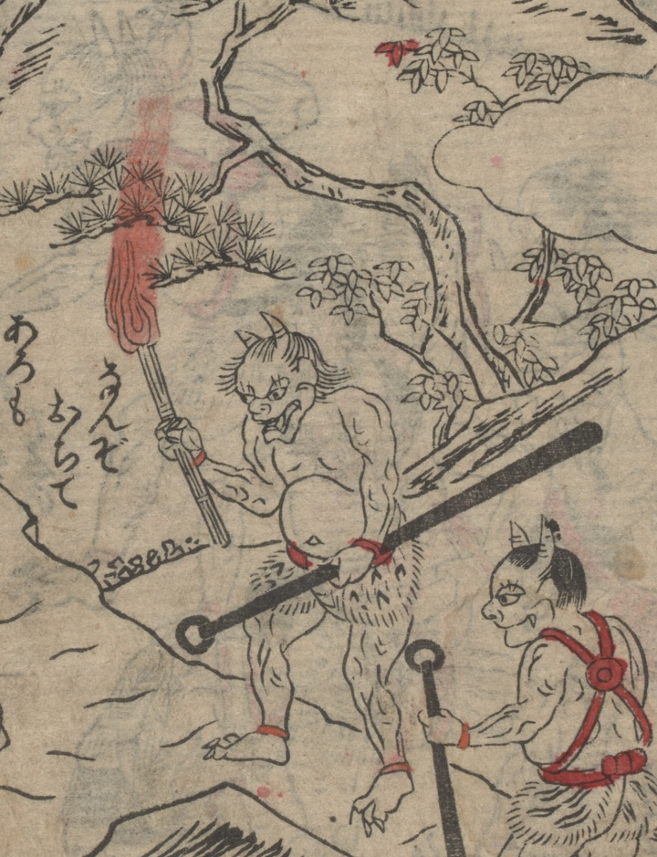

2本の角が生えた鬼。上半身は裸で、毛皮の腰巻をつけて褌を締めている。手に金棒と松明を持つ。大江山城郭の周辺を見回りしている。
著作者：不明／出典：親書誌：U426_nichibunken_0473：[絵本千丈嶽]；エホンセンジョウガタケ／日付：2025／資源識別子：U426_nichibunken_0473_0003_0001
Copyright (c)2010- International Research Center for Japanese Studies, Kyoto, Japan. All rights reserved.